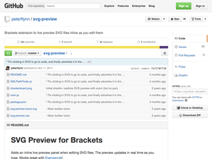

- SVG Optimizer
- SVG Optimizer GUI
- Grumpicon
- SVG Optimisation Basics
- Scour
- SVG Editor
- Export SVG for the web with Illustrator
- Optimizing Inkscape SVG size for the Web
- Script to export PSD to SVG
- SVGeezy
- SVG Cleaner
- Export Flash to SVG
- Using SVG to shrink your pngs
- SVG MAGIC
- FakeSMILE
- Open Source SVG Editor
- Orthogonal
- Iconizr
- ZorroSVG - Put a Mask on it
- Optimizing SVG for Web
- Tips for optimising svg delivery for the web
- Brackets-svg-code-hints
- deSVG
- SVG Now
- PicSVG
- SVG Preview
- Illustrator SVG Exporter Script
- SVG OMG